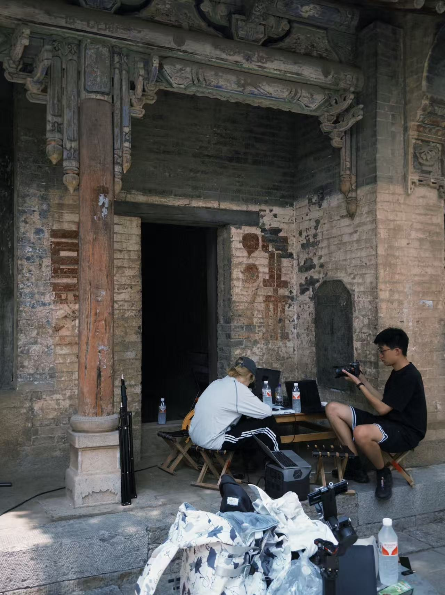
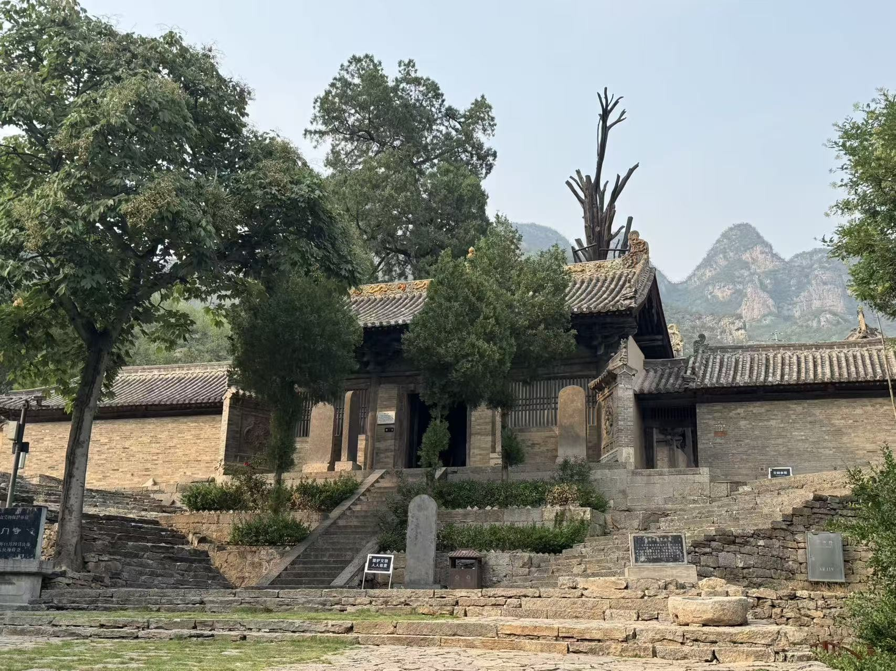
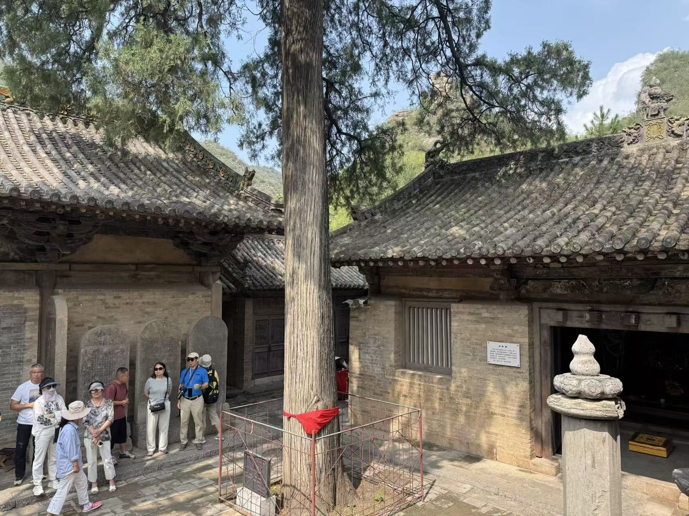
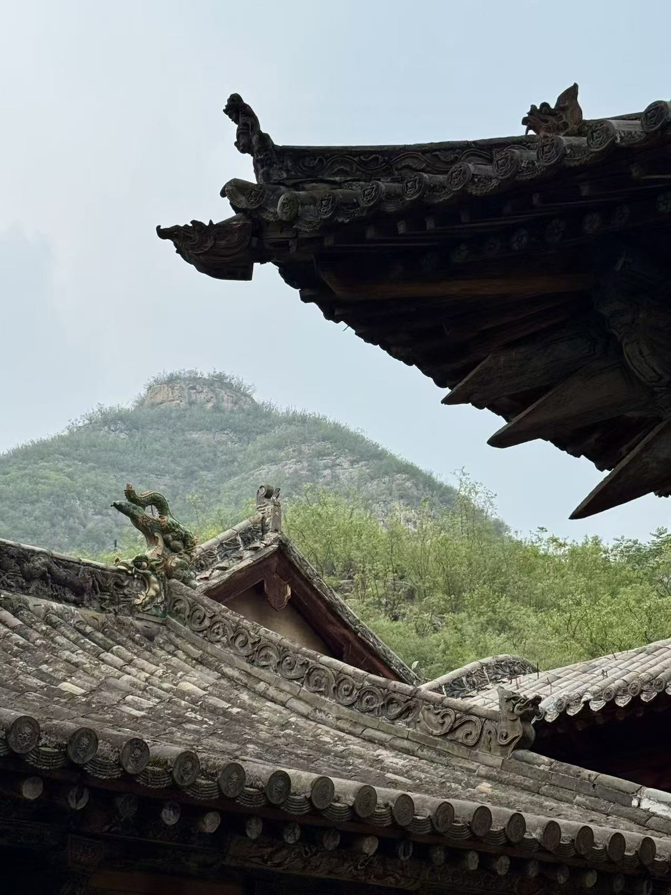
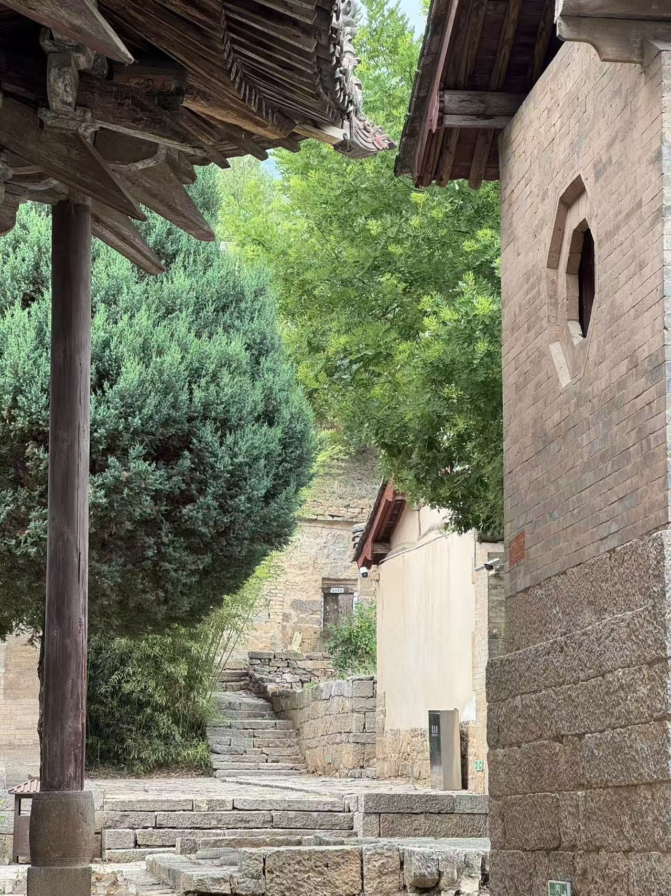
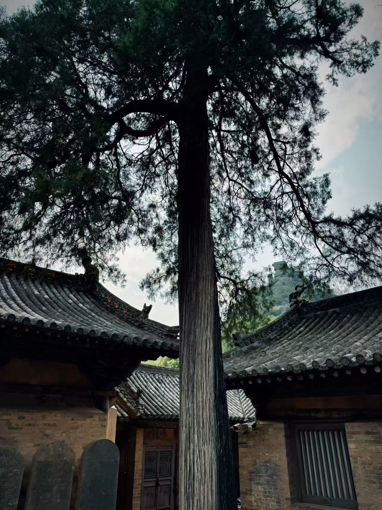
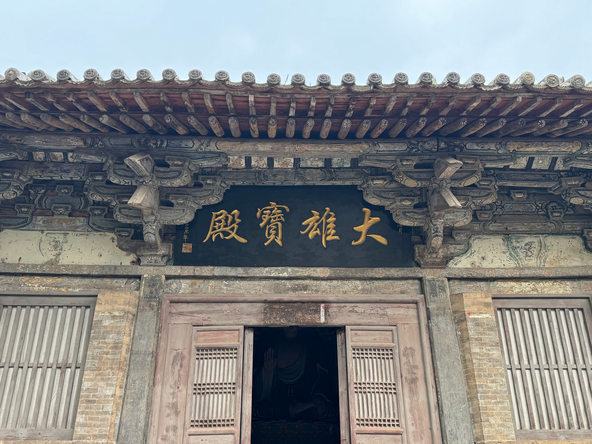
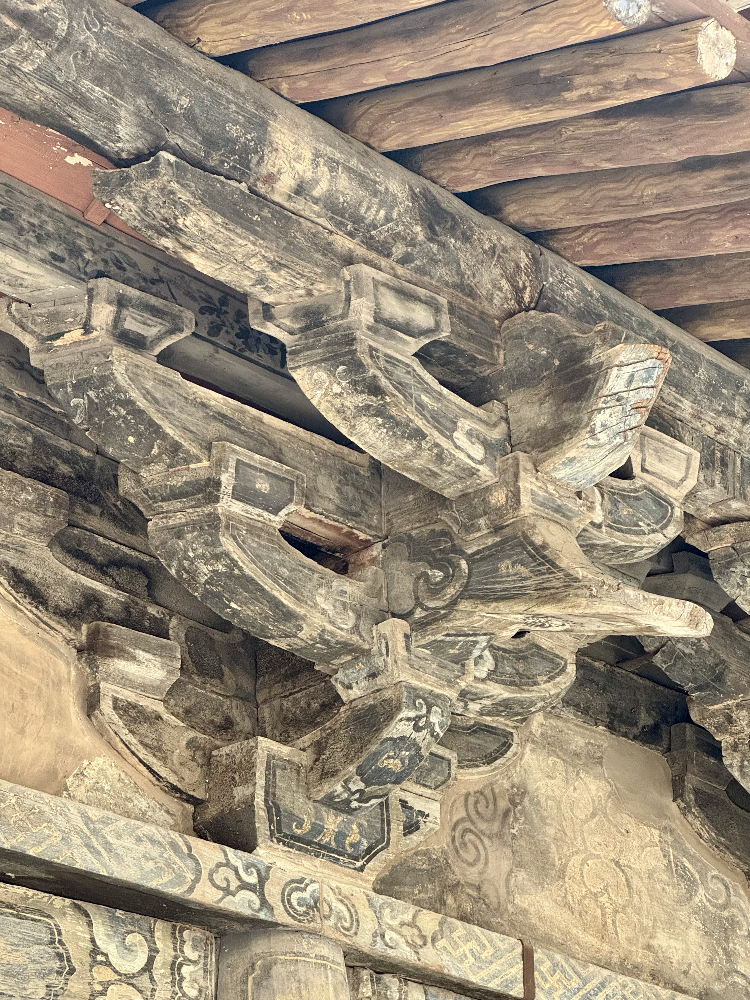
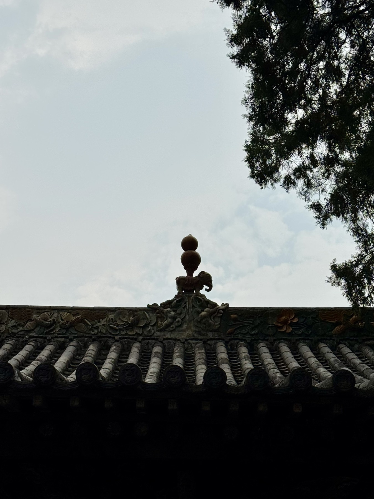

21 / 现场准备
19 / 斗拱结构
项目 05 / 龙门寺
龙门
寺
38 次观察。
一份现场记录。
扫描考察中的原始照片：人物、庭院、通道、屋顶轮廓与材料细节。
田野调查 / 建筑 / 表面
记录龙门寺外部空间时，我们使用索尼相机采集三维扫描与空间记录所需的影像，覆盖建筑及周边环境。通过记录建筑结构、屋顶细节、石阶与自然景观，逐步建立外部空间的三维模型，为后续数字重建、古建保护与虚拟环境呈现提供数据。
从全景影像中提取屋顶信息，并补充近距离照片，记录更精细的建筑特征。
从全景影像中提取屋顶信息，并补充近距离照片，记录更精细的建筑特征。
通过影像扫描记录树木的形态与结构，为后续三维重建提供依据。
大雄宝殿是龙门寺数字记录的重点。我们从不同角度和距离拍摄建筑外部，重点记录屋檐、斗拱、立柱、门窗与表面纹理，为完整呈现建筑形态与细节提供参考。
同时，以全景摄影记录大殿与周围庭院的整体布局，保存建筑尺度、位置及其与环境的空间关系。结合高清建筑照片与全景影像，使三维模型兼顾细节和整体空间的连贯性，为建筑细部修复与沉浸式虚拟环境提供依据。
为补充地面摄影与全景影像，我们利用无人机从上方记录屋顶。建筑高度、拍摄角度和周边环境限制了地面视角，航拍则补足屋顶整体结构与建筑细部。
01
扫描
内容
02
03
龙门寺 / 原始彩色照片
现场档案 / 01

通过全景摄影记录整个庭院的建筑布局、空间结构与周边环境，保留庭院的空间关系和环境特征，为后续三维重建与数字环境复原提供参考。
04






